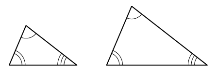
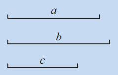
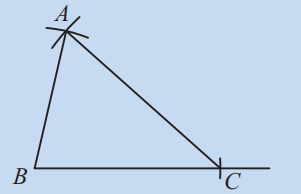
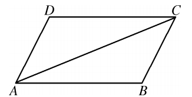
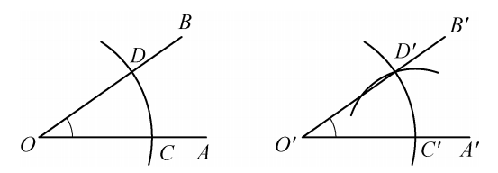
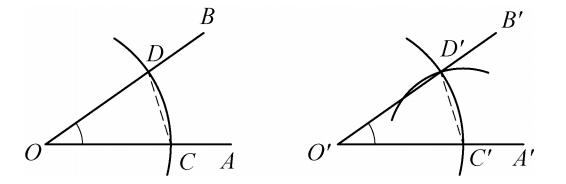
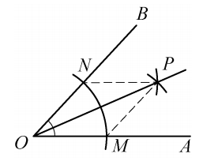
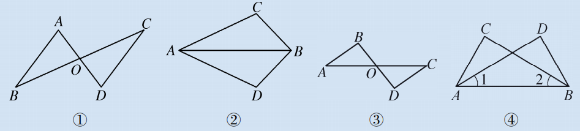
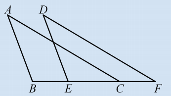
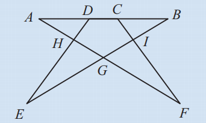

我们已经讨论了两个三角形有两边一角、两角一边分别相等时的情况。如果两个三角形有三个角分别相等，那么这两个三角形是否一定全等呢？如图12.2.17所示，两个三角形的三个角分别相等，但边长不同，它们不全等。因此，三角相等不能判定全等。

最后，如果两个三角形有三条边分别相等，那么这两个三角形是否一定全等呢？为此我们以已知的三条线段为三角形的三边，作三角形，看看你和同伴作出的三角形是否全等。
如图12.2.18，已知线段 $a, b, c$，试作 $\triangle ABC$，使 $BC = a$，$AC = b$，$AB = c$。


作法：
(1) 作线段 $BC$，使 $BC = a$；
(2) 以点 $B$ 为圆心、线段 $c$ 的长为半径作圆弧，以点 $C$ 为圆心、线段 $b$ 的长为半径作圆弧，两弧相交于点 $A$；
(3) 连结 $AB, AC$。
如图12.2.19，$\triangle ABC$ 即为所要求作的三角形。
把你作的三角形与其他同学作的三角形进行比较，或剪下你作的三角形，放到其他同学作的三角形上，看看是否完全重合。所作的三角形都全等吗？
换三条线段，试试看，是否有同样的结论？
由以上操作，可以发现它们完全重合，所作的三角形都全等。
我们也可以借助下面的交互工具，动态调整边长，亲身体验“边边边”判定：
通过动态实验可以发现：当两个三角形的三条边长度分别相等时，它们能够完全重合，形状大小完全相同。这验证了基本事实“三边分别相等的两个三角形全等”（SSS）。
三边分别相等的两个三角形全等。（简写成“边边边”或“SSS”）
三角形具有稳定性，正是源于SSS判定——当三边固定，三角形唯一确定。
如图12.2.20，在四边形$ABCD$中，$AD = CB$，$AB = CD$。求证：$\angle B = \angle D$。

证明：
连结$AC$。
在$\triangle ABC$和$\triangle CDA$中，
$\because AB = CD$ (已知)，
$BC = DA$ (已知)，
$AC = CA$ (公共边)，
$\therefore \triangle ABC \cong \triangle CDA$ (SSS)。
$\therefore \angle B = \angle D$ (全等三角形的对应角相等)。
利用尺规作图作一个角等于已知角，其依据就是SSS。如图12.2.21，已知$\angle AOB$，求作$\angle A'O'B' = \angle AOB$，作法后证明两角相等。


证明： 如图12.2.22，连结$CD$、$C'D'$。
由作图知：$O'C' = OC$，$O'D' = OD$，$C'D' = CD$。
在$\triangle C'O'D'$和$\triangle COD$中，
$\because O'C' = OC$，$O'D' = OD$，$C'D' = CD$，
$\therefore \triangle C'O'D' \cong \triangle COD$ (SSS)。
$\therefore \angle C'O'D' = \angle COD$，即$\angle A'O'B' = \angle AOB$。
如图12.2.23，我们曾利用尺规作图作出已知角$\angle AOB$的平分线。你能证明射线$OP$确实是$\angle AOB$的平分线吗？

由作法可知$OM = ON$，$MP = NP$，又$OP = OP$，根据SSS可得$\triangle OMP \cong \triangle ONP$，所以$\angle MOP = \angle NOP$，即$OP$平分$\angle AOB$。
至此，我们已经学习了关于全等三角形的三个基本事实，这是进行演绎推理的重要依据，它们是我们通过探索发现的判定方法，其本质与用变换给出的全等三角形定义是一致的，即在这些条件下，两个三角形一定可以通过图形的基本变换（轴对称、平移和旋转）而相互重合。
我们可以将前面在对全等三角形判定的探索中得到的结论归纳成下表：
| 分别相等的元素 | 两边一角 | 两角一边 | 三角 | 三边 | ||
|---|---|---|---|---|---|---|
| 两边及其夹角 | 两边及其中一边的对角 | 两角及其夹边 | 两角及其中一角的对边 | |||
| 三角形是否全等 | 一定 (SAS) | 不一定 | 一定 (ASA) | 一定 (AAS) | 不一定 | 一定 (SSS) |
1. 根据题图及相应的条件，能否判定下面分别给出的两个三角形全等？

(1)如图①，线段$AD$与$BC$相交于点$O$，$AO = DO$，$BO = CO$。$\triangle ABO$和$\triangle DCO$。
(2)如图②，$AC = AD$，$BC = BD$。$\triangle ABC$和$\triangle ABD$。
(3)如图③，线段$AC$与$BD$相交于点$O$，$\angle A = \angle C$，$\angle B = \angle D$。$\triangle ABO$和$\triangle CDO$。
(4)如图④，$\angle CAB = \angle DBA$，$\angle 1 = \angle 2$。$\triangle ABC$和$\triangle BAD$。
(1)全等，SAS；(2)全等，SSS；(3)不全等（只有两角相等，但边不一定对应相等）；(4)全等，ASA（由$\angle 1=\angle 2$得$\angle ABC=\angle BAD$，加上公共边$AB$）。
2. 如图，点$B,E,C,F$在同一条直线上，$AB = DE$，$AC = DF$，$BE = CF$。

(1)求证：$\angle A = \angle D$；(2)找出图中互相平行的线段，说明你的理由。
(1)由$BE=CF$得$BE+EC=CF+EC$，即$BC=EF$。在$\triangle ABC$和$\triangle DEF$中，$AB=DE$，$AC=DF$，$BC=EF$，∴ $\triangle ABC \cong \triangle DEF$(SSS)，∴ $\angle A = \angle D$。
(2)$AB \parallel DE$，$AC \parallel DF$。理由：由全等得$\angle ABC = \angle DEF$，∴ $AB \parallel DE$；$\angle ACB = \angle DFE$，∴ $AC \parallel DF$。
3. 如图，点$C,D$是线段$AB$上的点，$AD = BC$，$AF = BE$，$CF = DE$。求证：$\triangle ACF \cong \triangle BDE$。图中还有其他的全等三角形吗？说明你的理由。

证明： 由$AD=BC$得$AD+DC=BC+DC$，即$AC=BD$。在$\triangle ACF$和$\triangle BDE$中，$AF=BE$，$CF=DE$，$AC=BD$，∴ $\triangle ACF \cong \triangle BDE$(SSS)。
其他全等三角形： $\triangle ADH \cong \triangle BCI$（ASA），$\triangle EHG \cong \triangle FIG$（AAS）。理由如下：由$\triangle ACF \cong \triangle BDE$可得$\angle A = \angle B$，$\angle AFC = \angle BED$，从而可证相关三角形全等。
转化思想： 通过构造全等三角形将角相等或线段相等的问题转化。
分类讨论： 全等判定方法中，SSS是最基础最严格的判定之一。
推理意识： 基本事实是几何推理的起点，演绎证明体现严谨性。